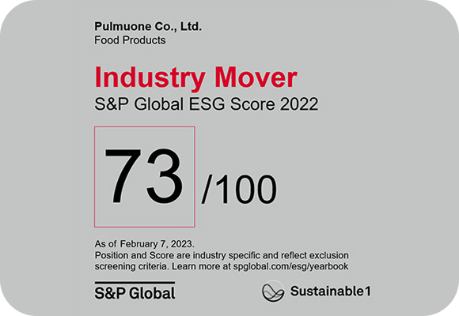
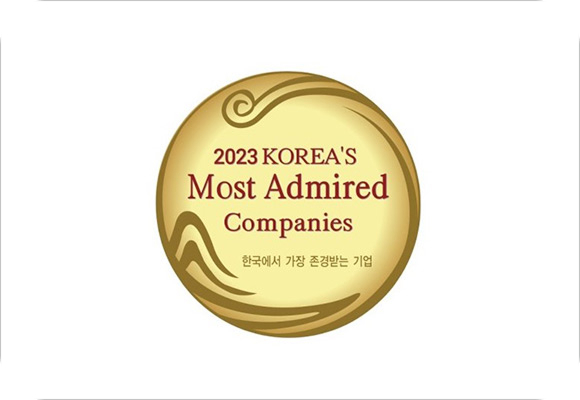
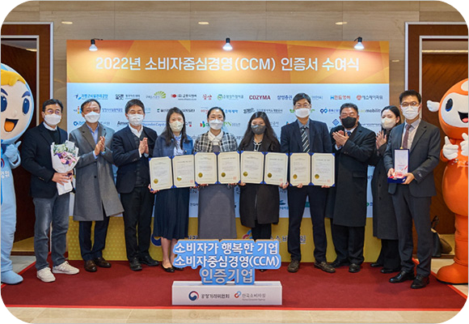
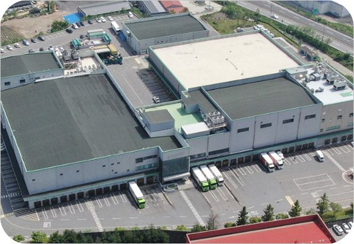

풀무원은 사회책임경영을 통해 ‘글로벌 No.1 기업’ 으로 도약하겠습니다.
풀무원 수상 내역-
 23년 3월
S&P CSA (Corporate Sustainability Assessment) 평가
(구 DJSI평가) 식품기업 유일 'Industry Mover’ 선정 -
 23년 3월
17년 연속 '한국에서 가장 존경받는 기업' 올스타(All Star) 선정 -
 22년 12월
풀무원 4개 계열사, CCM(소비자중심경영: Consumer Centered Management) 인증 획득 -
 22년 4월
식품 물류센터 최초 한국식품안전 관리인증원으로부터 식품 냉동·냉장업 식품안전관리인증기준(HACCP) 획득